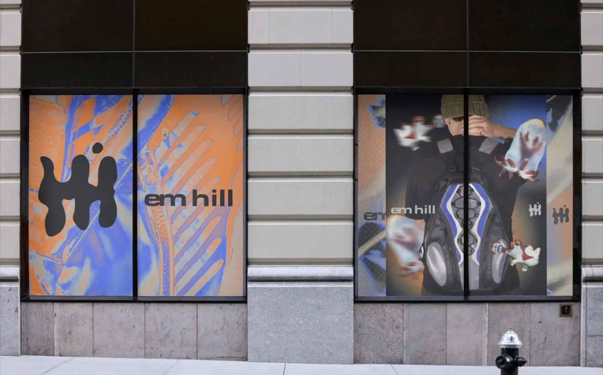
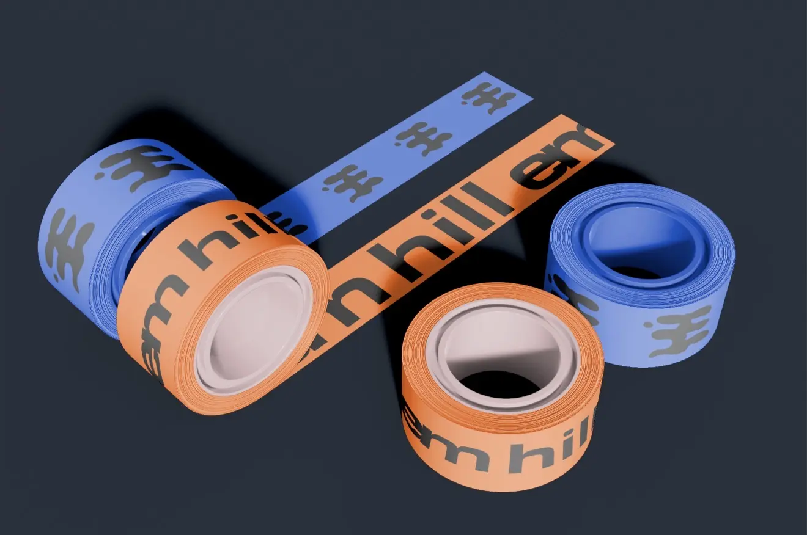
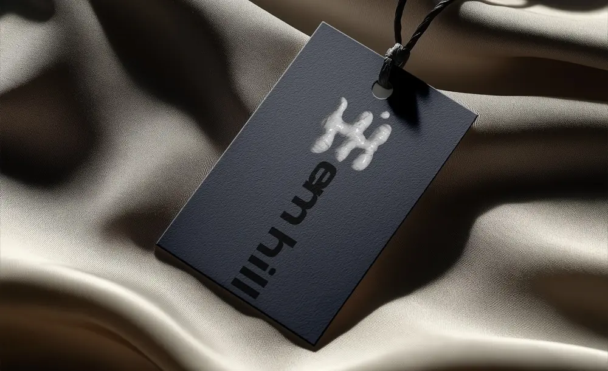
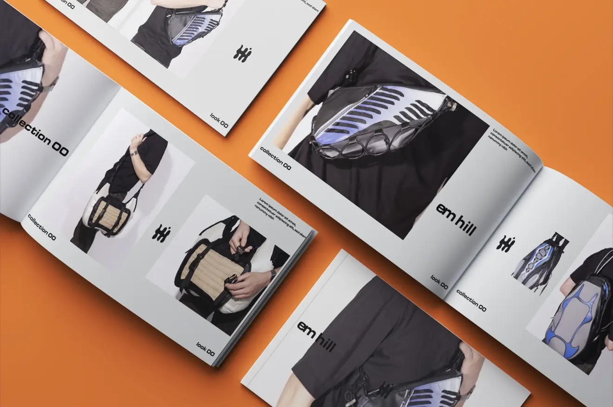
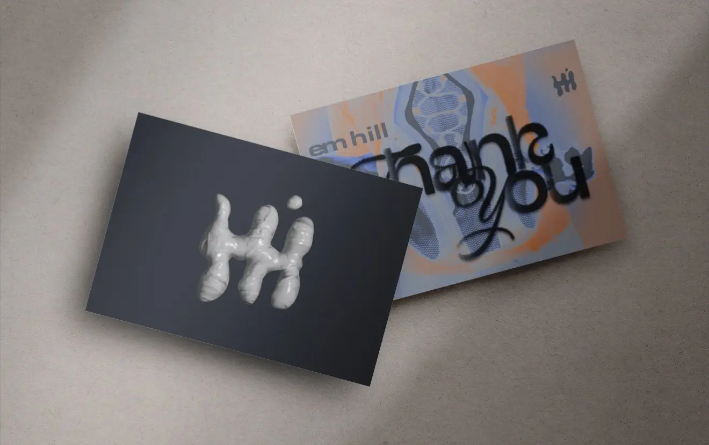
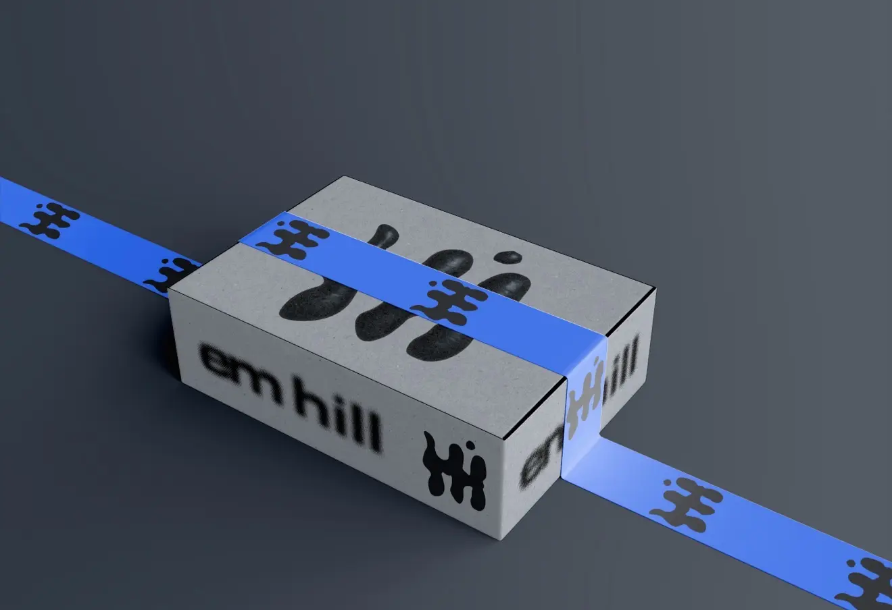
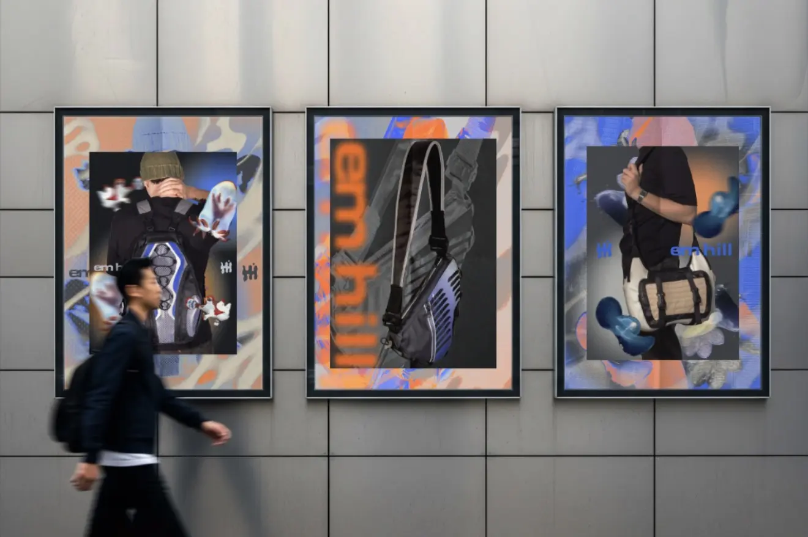
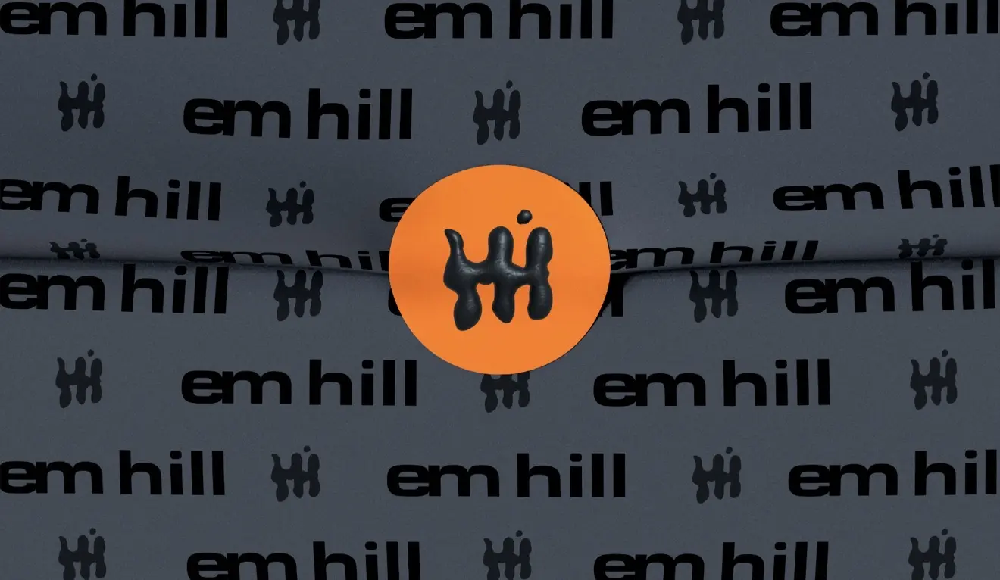
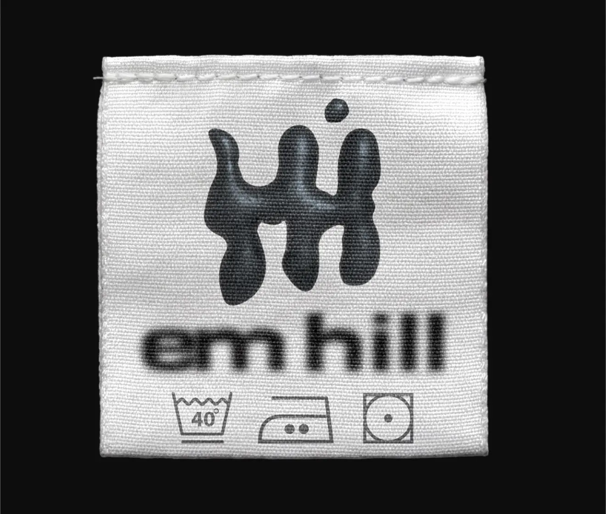

Finding the tension
The direction began with “technical nature”: outdoor utility and engineered details meeting soft, strange, organic form. That contrast became the foundation for a brand that could feel sporty without looking expected.
Accessories brand / client work / 2026
technical nature
— made wearable
An alternative, sport-forward identity for an accessories brand built where organic form, technical function, and fashion experimentation meet.

the project
Em Hill is an alternative, sport-forward accessories brand. For this client project, I developed a complete visual identity around the tension between organic shape and engineered function—something expressive enough for fashion, but structured enough to feel sharp, useful, and ready to move.
A fluid symbol, bold typography, high-contrast imagery, and electric orange and cobalt accents gave the brand a recognizable language across packaging, labels, campaign graphics, retail moments, and lookbook applications. The final system felt energetic and distinct while staying flexible enough to grow with future collections.


Behind the work
The direction began with “technical nature”: outdoor utility and engineered details meeting soft, strange, organic form. That contrast became the foundation for a brand that could feel sporty without looking expected.
I paired a fluid, dimensional mark with direct typography and a graphite base. Cobalt blue and electric orange act as controlled bursts of energy, while texture, blur, and close-up product imagery keep the system tactile and fashion-led.
The identity was expanded across garment labels, hang tags, shipping materials, business cards, lookbooks, campaign posters, and storefront graphics. Each application shifts the balance of type, image, and symbol while remaining recognizably Em Hill.






end of project